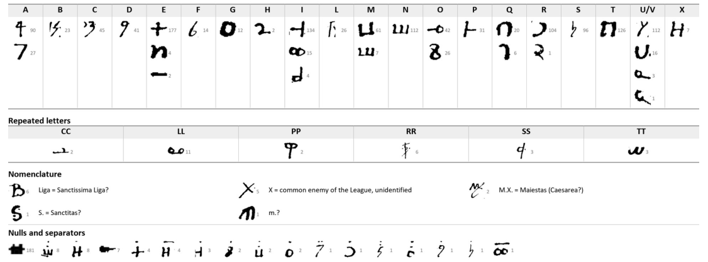

At a glanceKey recovered from the ciphertext alone · 1,462 of 1,469 cipher signs (99.5%)
- The document
- Three written pages of articles: the first and second demands of Maximilian I, King of the Romans, and the Sienese orators’ counter-demands, subscribed by the royal secretary Niklas Ziegler; Pisa, November 1496 (undated; dated by George Lasry).
- Where
- Archivio di Stato di Siena, Concistoro 2308, fasc. 2, no. 18; DECODE R4806, catalogued “1500–1599” with no sender, receiver or status.
- The cipher
- Homophonic substitution on 60 signs: letter signs with homophones, signs for doubled letters (rr, pp, ss, ll, cc, tt), dotted or barred signs as nulls, and a few code capitals (B., X., M.X.) left in clear.
- How it was deciphered
- Twice from the ciphertext alone. Here on 24 September 2026 (annealing with a Latin model, 87.1% read); independently by George Lasry with CTTS and Claude on 15–17 October 2026, from cribs in the clear Latin around the cipher words. His key agrees with ours on 35 of his 38 letter signs.
- What it says
- Siena is to join the Holy League at half the Pope’s quota, lend the King 5,000 ducats, ready its artillery and open war on the enemy at Ponte a Valiano; the orators ask for every place taken within five miles of their border.
- Still open
- Six single signs; what B., X., S., M.X. and m. stand for.
- Credit
- George Lasry: independent solution, the complete reading and translation, the parties and the date (report of 17 October 2026). The project: the first key (24 September 2026) and the comparison.
These articles were filed here until 14 October 2026 with the rest of the Sienese bundle of cipher letters, in which nearly every piece has its own key. The other pieces are different ciphers, each with its own page; the bundle is listed on the collection’s page.
01The articles and their key
Three written pages (P4, P3, P1 in DECODE’s numbering; P2 is blank) carry 1,469 cipher signs in point-separated words inside the running Latin, by George Lasry’s count. P4 opens “Primo loco petita per Cesaream Maiestatem ab oratoribus Senensibus”; P1 carries the subscription “Niccolaus Ziegler, Regis Secretarius” and the King’s second demands.
The project’s key (24 September 2026) came from the annealing search with a Latin model on a transcription of 30 sign names; a check on the images split three look-alike pairs and showed that dotted signs are nulls. It read 1,271 of 1,459 signs (87.1%). George Lasry’s key, recovered without ours, names 60 signs, because his transcription separates glyphs ours had merged. Matched sign by sign, 35 of his 38 letter and doubled-letter signs carry the same value in ours (3 of them as glyphs our transcription had merged with a look-alike); one differs (a sign he reads cc, we c), and two signs that occur once each are not in ours. The one passage printed on his web page (restituerentur, ita tamen quod ipsi Senenses … stare iuri coram) is our own reading of it word for word, cipher and clear words falling the same way.


02What they say
George Lasry’s reading, quoted from his report; abbreviations expanded in square brackets, the code capitals in brackets, ÷ and ✱ single unread signs. The full Latin and translation are in lasry_report.md.
Item q[uod] pro bono rei p[ublice] Sen[ensis] ÷ et [B]. illico manus apponerent ut saltem medietas illor[um] castrorum et arcium, ad que ipsi Senensib[us] ius competit, eis restituerentur, ita t[ame]n q[uod] ipsi Senenses ad requisitionem Florentinorum sint contenti de stando iuri coram Cesare, dummodo Florentini etiam de illis que ipsi occupant sint contenti stare iuri coram ÷
“That, for the good of the Sienese republic, [the League] should at once put its hand to it, so that at least half of the castles and fortresses to which the Sienese have a right are restored to them; on condition that the Sienese, at the Florentines’ request, be content to stand to law before Caesar, provided that the Florentines likewise be content to stand to law before [Caesar] over the places they occupy.” (his translation)
P4, the King’s first demands. Siena is to state its grievances against Florence and the places the Florentines hold; accept Caesar as ordinary and supreme judge; join the Most Holy League at a quota set by Caesar, half the Pope’s; and supply passage, victuals, 100 men-at-arms and 60 light horse.
P3, the Sienese counter-demands. Every town, fortress and castle within five miles of the Sienese border taken in the war goes to Siena, and the “diligentia” and the tower at the Valiano bridge are to be handed over before any peace with the enemy.
P1, the King’s second demands. Talamone and the artillery are to be put in order; Siena lends the King 5,000 ducats, which [M.X.] will repay within two months; Siena enters the League, which will protect its present regime, and opens war on the enemy around Ponte a Valiano. Subscribed by Niklas Ziegler.
Date. The articles are undated. George Lasry places them at Pisa in November 1496, during Maximilian I’s Italian expedition with the forces of the Holy League of 1495, whose treaty set the Pope’s quota at half the others’: Ziegler is attested as the King’s secretary from 1494 and was with the court on 25 November 1496 (Regesta Imperii XIV,2 n. 4508), Pecci’s Balìa deliberations of September–October 1496 record the same demands, and the Sienese attacks on the Florentine bastion at Ponte a Valiano in 1496 were made at the League’s urging (Guicciardini III.8). This page earlier gave “1510s–1520s”; his dating replaces it.
03The two solutions compared
His reading covers the words ours left open or doubtful. Graded against our transcription and key (H read from the key, M uncertain), in ten places his readings are H: in ordinem (where we saw a struck word), ponant, pulveres, que after B., cum, armature, defendat (ours defendam), quote (ours quoti), imponitur, ius competit, habeat; three are M: Telamonem (the damaged first word), pax (ours passo?) and his own query s[anctissima]?. In six places of the clear Latin his readings are the grammatical ones. The table, sign by sign and word by word, is in lasry_comparison.md.
The statistical test on the project’s own key (docs/_validate.py, Latin letter model) gave underdetermined: our transcription kept look-alike pairs under one sign name, so a one-value-per-sign key scored below the annealer. George Lasry’s key, which separates those glyphs, explains why.
04What remains
- Six single signs unread in his text: ÷ four times, ✱ twice.
- The code capitals, written in clear: B. (the League?), X. (the common enemy), S., m. and M.X. (a League member guaranteeing the loan, the King himself or Milan?); George Lasry leaves M.X. unidentified.
05Sources
- Archivio di Stato di Siena, Concistoro 2308 fasc. 2 no. 18: DECODE R4806.
- George Lasry, “The cipher documents of Concistoro 2308, fasc. 2”, report sent to Daniel Bourdeau, 17 October 2026, section F (decipherment, key, translation, context and dating).
- Regesta Imperii XIV (Maximilian I.), RI Online; G. A. Pecci, Memorie storico-critiche I (Siena 1755); M. Sanudo, I Diarii I; F. Guicciardini, Storia d’Italia III.8; H. Ulmann, Kaiser Maximilian I. (1884); as cited by George Lasry.
- A. Meister, Die Anfänge der modernen diplomatischen Geheimschrift (Paderborn 1902), pp. 50–51, on the bundle.
Manuscript rights: Archivio di Stato di Siena.
Transcriptions, the project’s key and reading, George Lasry’s report and the comparison: targets/siena18/.